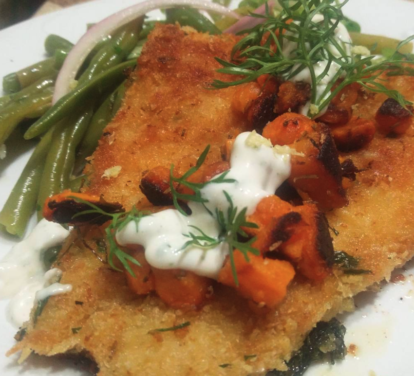

Fish and Green Beans

Ingredients
- White Fish (Cod, Perch, Haddock, anything you can get your hands on without breaking the bank)
- Green Beans
- Greek Yogurt
- Capers
- Mustard
- Worchestire Sauce
- Garlic Powder
- Pickles
- Red Onion/li>
- Rocket
- Sweet Potato
- Lemon
- Eggs
- Panko Breadcrumbs
Method
- We'll get started with the hardest/longest part of this dish, crack eggs in a container, put flour in
another and panko breadcrumbs, salt, pepper, garlic powder, and any green herbs if you are into that.
- Throw your fish first in flour, then in eggs, then Panko breadcrums./li>
- Put the fish aside, you will not need them until the end (which don't worry its not far away.
- Put a pan with water on high heat when it starts boiling add salt and throw in your green beans only for 1-2
mins you don't want over cooked beans, once they are cooked you can put them in an ice bath...
- While the water is getting hot, you are going to chop you sweet potato into small cubes and red onion lenght
ways throw them in a pan cook them nice add seasoning and dont over burn them a little crisp is good here.
- Once everything is going grab a bowl, throw in Greek Yogurt, chopped pickles, capers, Worchestire sauce,
Lemon zest, lemon juice, Mustard and Garlic Powder stir and let sit.
- Green beans should be done by now, Sweet potatoes almost, Sauce waiting, grab a pan add olive oil let it get
nice and hot, throw your fish let cook and a controlled heat for approx 5-7 mins, only after this time flip
the fish, if you are not comfortable doing so, you can also finish the fish in the over (in this case makes
sure the oven is nice and hot over all approx 10mins cooking).
- When the fish is out of the oven, plate green beans, fish on top, top it with the sweet potato and onions,
top up with some of your yogurt sauce, add some rocket if your into it and enjoy!